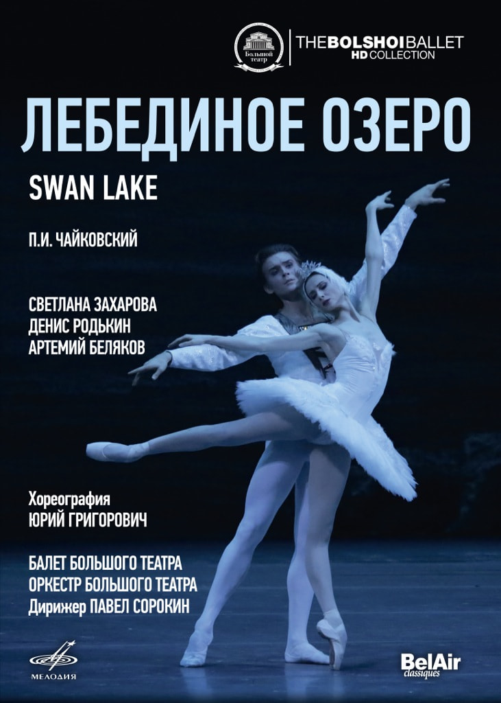

Большой театр
Большо́й теа́тр — петербургский театр, существовавший в 1784—1886 годах, с 1886 года — Петербургская консерватория. Первое постоянное в Санкт-Петербурге, крупнейшее в России и одно из крупнейших театральных зданий в Европе XVIII.
афиша
